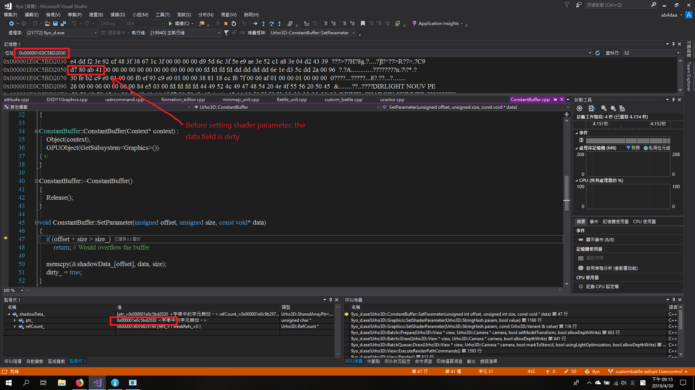
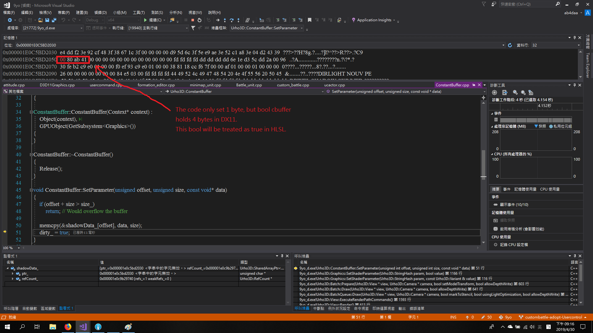
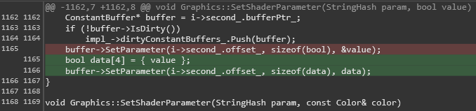

Hi,
I encountered shader parameter problem, maybe it is not the root cause, just want to share my observation and ask for comment.
The problem is when I port outline shader to 2nd scene, the outline is always enabled, but 1st scene works fine.
I eventually get to
Graphics::SetShaderParameter(StringHash param, bool value)
in D3D11Graphics.cpp.
It seems the “buffer” will be overwritten and overwritten during drawing batches and batches, so the initial value of the bool cbuffer is a dirty value.

The code only set 1 byte while the cbuffer actually holds 4 bytes.

A quick dirty fix can fix the problem on my side.

Not sure this is the right place to fix, any comment is welcome, thank you.